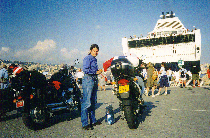
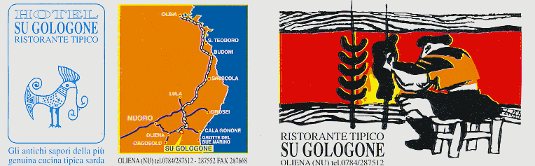
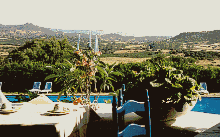
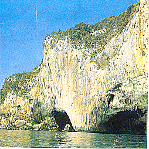
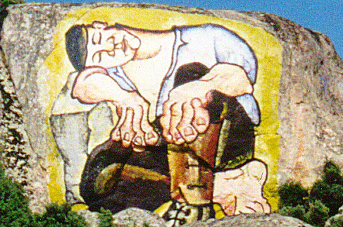

|
|
 |
|
- L'embarquement à Gênes sur l'Excelsior - |
La nuit en bateau (Grandi Navi Velocchi), avec une bonne cabine de préférence
pour se croire en croisière. Le repas à bord par contre détruit
l'illusion ! Arrivée au petit matin à Olbia après 221 miles de traversée
et départ pour la région d'Oliéna, pour le début de notre séjour.
Notre périple en Sardaigne
29 juin au 4 juillet : camp de base à l'hôtel " Su Gologone " - Oliena
29/6 : découverte de Cala Gonone à Spiaggia Fuili
30/6 : visite de la grotte " Bue Marino ", journée à "Cala Luna ",
ballade en moto Dorgali - Marina di Orosei - Cala Liberotto
1er/7 : excursion à la " Gola su Gorruppu " en 4x4 puis à pied
2 / 7 : circuit Oliena - Dorgali - Baunei - S.Maria Navarrese - Torre di Bari -
Lanusei - Villanova Strisaili - Mamoiada - Nuoro - Oliena
3
/ 7 : tour de plages de Cala Gonone (Cala Osalla, Cala Cartoe)
4 / 7 : départ vers Villasimius par la SS125 puis C. Ferrato, la Costa Rei
|
|
|
- Route des vacances - |

4 juillet au 5 juillet : hôtel Cormoran à Villasimius
4 / 7 : visite Villasimius
5 juillet au 8 juillet : hôtel résidence " Palm Village " - Villasimius
5 / 7 : ballade Capo Ferrato, Costa Rei
6 / 7 : journée à Cagliari
7 / 7 : circuit Villasimius - Cagliari - Pula - Costa d. Sud - Giba - San Antioco -
Masua (Pan di Zucchero) - Iglesisas - Cagliari - Villasimius
8 / 7 : route vers Porto Torres par Cagliari puis par la SS131
8 juillet au 9 juillet : hôtel " Toluca " - Platamona Lido
8 / 7 : visite Porto Torres
9 / 7 : embarquement pour Gênes
L'hôtel Su Gologone

- La publicité -
|
|
|
- Une salle de restaurant - |

Cet
hôtel est une étape obligatoire d'un séjour en Sardaigne. On y reçoit un
accueil superbe; la nourriture est réellement typique (chaque jour, des
cochons de lait rôtissent devant le feu de bois). Le cadre est très chouette
et les repas sur la terrasse sont une pure merveille (avec une mention spéciale
pour les petits déjeuners). Grande piscine, équitation et tennis sur place;
de nombreuses excursions organisées chaque jour en 4x4 et à pied (Tiscali,
Gorroppu, Ispinigoli). Bref, le bon goût à tous les niveaux, la gentillesse
en plus.

- Vue de notre chambre -

- La terrasse à l'heure du petit déjeuner -
Cala Gonone
Station
balnéaire la plus proche d'Oliena ; on y accède depuis Dorgali en
passant par un long tunnel et une jolie route en lacets de plusieurs kilomètres.
La station n'a rien de très typique mais possède plusieurs plages :
Osalla et Cartoe au nord, Fuili au sud (la plus jolie, avec une falaise équipée
pour l'escalade).

- Grotta del Bue Marino -
C'est
aussi un port d'où l'on embarque pour la grotte Bue Marino (900 m de
galeries à visiter) et la superbe plage de Cala Luna (sable blanc et grottes
dans la falaise) ; location de bateaux moteurs ou expédition découverte
de la côte aussi possible. La plus belle vue de l'endroit se découvre au
col entre les monts Irveri et Bardia, sur la petite route qui revient de Cala
Osalla à Cala Gonone ; elle doit se mériter car la route est étroite
et, par endroits, vertigineuse.

- Une peinture sur la montagne à Villanova Strisaili -

- la piscine de Roccesarde -

Bon, je pense que cette page ne sera
jamais achevée, mais je tiens à vous rassurer, nos vacances se sont bien
terminées et leur souvenir nous a tant remué que finalement nous y sommes
repartis en 2001, toujours en moto, mais en emmenant le gamin cette fois-ci.
dernière mise à jour : 14/02/2024